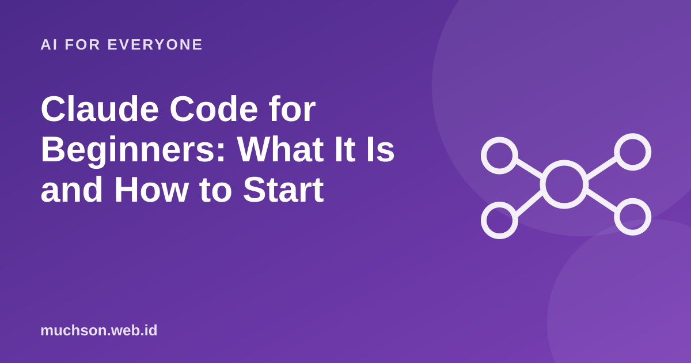

Home › Articles › AI for Everyone
AI for EveryoneClaude Code for Beginners: What It Is and How to Start
Unlike a chatbot that only gives advice, a coding agent such as Claude Code works directly in your project: it reads files, changes code, runs commands and reports back. That is a lot of power, so the way you work with it decides everything.

How is it different from an ordinary chatbot?
Text description of the diagram
Coding chatbot
- You paste a piece of code
- It gives advice in the chat
- You copy the result
- Does not know the whole project structure
- Runs nothing
Coding agent
- Works in the project folder
- Reads many files itself
- Edits files directly
- Runs tests and commands
- Reports results and waits for direction
A safe workflow
Text description of the diagram
- Set a small task
- The agent changes the code
- Review the changes (diff)
- Run the tests, then commit
then back to the first step.
Examples of good and bad tasks
Limits to remember
- The agent can misunderstand your intent or make changes beyond the request. Review everything.
- The result is only as good as the context and tests available. A project with no tests is riskier.
- Security is still your responsibility: validate input, manage secrets, review dependencies.
- Features and commands change. See Anthropic's official documentation for the latest installation and usage.
Advice for starting
Start with a small, non-critical project. Get used to reading the diff and running the tests before you trust the agent with more important work.
FAQ
Is Claude Code free?
Availability and cost depend on the plan and on usage. Check Anthropic's official page for the latest information.
Do I need to know how to code?
Basic understanding helps a lot in judging the results. Without it, the risk of accepting wrong or unsafe code goes up.
Is it safe to give an agent access to my project?
It is, if permissions are limited, there is Git and you review the changes. Do not keep secrets where they do not need to be readable.